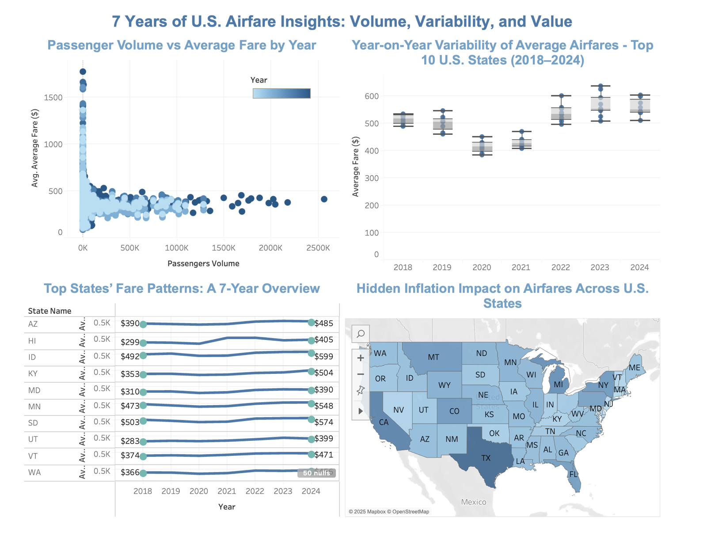

The question
Airfares dropped during the pandemic and then came back, but by how much, where, and what does it look like once you account for inflation?
Approach
- Cleaned and prepared airport-, city- and state-level fare data from the Bureau of Transportation Statistics (BTS) with SQL, Python and Excel.
- Normalized fares into both nominal and inflation-adjusted terms, so real changes could be separated from price-level effects.
- Built 11 interactive Tableau visualizations, including state-level choropleth maps (Mapbox, OpenStreetMap) such as "Hidden Inflation Impact" and "How U.S. Airfares Shifted, 2018–19 vs 2024."
Overview

Across the top 10 states, average fares dipped in 2020–21 and then climbed above their 2018–19 levels from 2022 onward.
Live visualizations
Both views are interactive: hover, filter and click through. On a phone, they're easier to explore in Tableau Public.